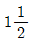
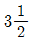
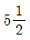
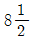

피아노조율기능사 (2009-01-18 기출문제)
1과목: 임의 구분
1. 피아노의 선 번호와 그 지름을 잘못 나타낸 것은?
- 15번 : 0.875 + 0.010mm
- 18번 : 1.025 + 0.013mm
- 20번 : 1.125 + 0.013mm
- 23번 : 1.325 + 0.015mm
(정답률: 알수없음)

2. 1802년 토마스라우드가 고안한 저음부와 중음부의 이중 교차현의 간격은 타현점에서 약 몇 mm 정도인가?
- 8
- 12
- 15
- 18
(정답률: 알수없음)
3. 향판에서 각 부분의 두께에 대하여 옳게 설명한 것은?
- 고음부가 얇고, 저음부가 두껍다.
- 고음부가 두껍고, 저음부가 얇다.
- 중음부가 두껍고, 고음부 및 저음부가 얇다.
- 중음부가 얇고, 고음부 및 저음부가 두껍다.
(정답률: 알수없음)
4. 다음 중 향판의 재질로 적합하지 않은 것은?
- 가문비나무
- 시트카스프루스
- 나도박
- 루마니아스프루스
(정답률: 알수없음)
5. 다음 중 피아노 외장의 도장 방식으로 가장 적합하지 않은 것은?
- 붓 도장
- 스프레이 도장
- 플로우코터 도장
- 전착 도장
(정답률: 알수없음)
6. 피아노선 24번의 인장강도(N/mm2)는 어느 정도인가?
- 2110~2290
- 2060~2250
- 1960~2200
- 1860~2140
(정답률: 알수없음)
7. 업라이트 피아노의 건반 깊이가 10mm일 때, 반대편 끝은 어느 정도 상승해야 하는가?
- 5mm
- 6.6mm
- 8mm
- 9.6mm
(정답률: 알수없음)
8. 다음 피아노 발달 과정 중 연대가 가장 빠른 것은?
- 타현거리를 좁히는 소프트 페달 출현
- 에라르 아그라프 발명
- 에라르 레피티션 액션 완성
- 호킨스 업라이트 특허 획득
(정답률: 알수없음)
9. 다음 피아노 부품 중 센터레일에 고정되어 있지 않는 것은?
- 잭 플랜지
- 댐퍼 플랜지
- 받드 플랜지
- 위펜 플랜지
(정답률: 알수없음)
10. 피아노의 페달은 연주에 지장이 없도록 간격을 유지해야 하는데, 일반적으로 바닥면에서 페달 앞 끝 윗면까지의 높이는 어느 정도이어야 하는가?
- 22~40mm
- 45~75mm
- 85~95mm
- 1⑤~125mm
(정답률: 알수없음)
11. 일반적으로 청각 가청한계 식별력의 최소와 최대의 차는 어느 정도인가?
- 8dB
- 80dB
- 800dB
- 8000dB
(정답률: 알수없음)
12. 온도 20℃일 때 음속은 343.7m/s이다.온도가 0℃일 때 음속은 몇 m/s가 되는가?
- 325.5
- 329.5
- 331.5
- 333.5
(정답률: 알수없음)
13. 음의 파장이 1.7m 인 경우 주파수는 몇 Hz인가? (단, 음속은 340m/s이다.)
- 0.0⑤
- 0.⑤
- 200
- 578
(정답률: 알수없음)
14. 파원에 대해서 상대속도를 갖는 관측자가 측정하는 파의 진동수가 파원에서 본 값과 다른 현상을 나타내는 것을 무엇이라 하는가?
- 반사효과
- 감쇠현상
- 도플러효과
- 회절현상
(정답률: 알수없음)
15. 근음(根音)으로부터 장3도 위의 음, 완전5도 위의 음을 합한 3화음으로 이루어진 화음을 무엇이라고 하는가?
- 감3화음
- 장3화음
- 증3화음
- 단3화음
(정답률: 알수없음)
16. 다음 중 반사도 되지만 흡수되어 버리는 성질이 가장 강한 주파수에 해당되는 것은?
- 낮은 주파수
- 높은 주파수
- 중간 주파수
- 초저 주파수
(정답률: 알수없음)
17. 등감곡선에서 1kHz 순음의 음압레벨이 100dB 이면 몇 폰(phon)에 해당되는가?
- 1
- 10
- 100
- 1000
(정답률: 알수없음)
18. 완전4도, 완전5도의 조율법에서 검사하는 방법으로 가장 많이 사용되는 음정은?
- 감4도, 감5도
- 완전5도, 옥타브
- 단3도, 단6도
- 장3도, 장6도
(정답률: 알수없음)
19. C음의 진동비를 1.000으로 하였을 때 다음 각 음의 평균율과 순정율의 차이를 옳게 나열한 것은?
- D음 : 평균율 1.122, 순정율 1.125
- E음 : 평균율 1.260, 순정율 1.260
- F음 : 평균율 1.325, 순정율 1.323
- G음 : 평균율 1.500, 순정율 1.500
(정답률: 알수없음)
20. 단6도에는 온음과 반음이 각각 몇 개씩 포함되어 있는가?
- 온음 2개, 반음 2개
- 온음 2개, 반음 3개
- 온음 3개, 반음 2개
- 온음 4개, 반음 1개
(정답률: 알수없음)
2과목: 임의 구분
21. 평균율에 있어서 A#14가 58Hz이면 정상보다 얼마나 낮은가? (단, A13은 55Hz이다.)
- 0.17Hz
- 0.27Hz
- 0.37Hz
- 0.47Hz
(정답률: 알수없음)
22. 건반 C28음과 F33음 4도의 맥놀이수(beat)는 얼마인가? (단, C28은 130.813Hz, F33은 174.614Hz이다.)
- 0.40
- 0.59
- 1.20
- 1.90
(정답률: 알수없음)
23. 음계에 대한 설명으로 옳지 않은 것은?
- 음계는 장음계와 단음계로 나눌 수 있다.
- 일반적으로 한 옥타브가 5개의 온음과 2개의 반음으로 이루어진 음계를 반음계라 한다.
- 장음계는 셋째음과 넷째음이 반음이고, 일곱째음과 여덟째음이 반음이다.
- 단음계는 음정 구조의 차이에 따라 자연스런 단음계, 화성스런 단음계, 가락스런 단음계로 구분한다.
(정답률: 알수없음)
24. 피아노 현의 부분음에 영향을 주는 요소가 아닌 것은?
- 현의 경도
- 현의 균질성
- 현의 음높이
- 현 양단의 고정상태
(정답률: 알수없음)
25. 다음 악기 중 연주 중에 비브라토를 사용할 수 없는 것은?
- 바이올린
- 첼로
- 비올라
- 피아노
(정답률: 알수없음)
26. 다음 중에서 가장 짧은 잔향시간을 요구하는 시설은?
- 콘서트홀
- 교회
- 강당
- 녹음실
(정답률: 알수없음)
27. 다음 중 안어울림 음정에 속하는 것은?
- 장6도
- 장7도
- 단6도
- 단3도
(정답률: 알수없음)
28. 옥타브 조율시 사용되는 검사법이 아닌 것은?
- 장3도, 장10도의 비교검사
- 옥타브 내 아래 4도, 위 5도의 보족음정 비교검사
- 옥타브 내 아래 장3도, 위 장6도의 보족음정 비교검사
- 2옥타브 검사
(정답률: 알수없음)
29. C28~C40 옥타브 조율시 보족음정 4도, 5도를 이용한 검사 방법으로 가장 옳은 것은?
- C28~F33의 맥놀이수와 F33~C40의 맥놀이수가 같으면 맞는 것이다.
- C28~F#34의 맥놀이수와 F#34~C40의 맥놀이수가 같으면 맞는 것이다.
- C28~G#36의 맥놀이수와 A37~C40의 맥놀이수가 같으면 맞는 것이다.
- C28~E32의 맥놀이수와 E32~C40의 맥놀이수가 같으면 맞는 것이다.
(정답률: 알수없음)
30. 음악의 3요소에 대한 다음 설명 중 틀린 것은?
- 리듬 : 일정한 규칙에 지배되는 셈여림이나 장단의 진행 상태를 의미한다.
- 음빛깔 : 발음체의 재료나 구조, 방음 방법의 차이에 ᄄᆞ라 생긴다.
- 멜로디 : 여러 개의 음을 일정한 규칙에 따라 미적, 시간적으로 연속 배열한 것이다.
- 화성 : 높이가 다른 두 개 이상의 음이 동시에 울리는 상태를 의미한다.
(정답률: 알수없음)
31. 평균율 음정과 순정율 음정과의 관계에 대한 다음 설명 중 옳은 것은?
- 평균율 장3도는 순정율 장3도보다 16센트 넓다.
- 평균율 장6도는 순정율 장6도보다 14센트 좁다.
- 평균율 단3도는 순정율 단3도보다 16센트 넓다.
- 평균율 단6도는 순정율 단6도보다 14센트 좁다.
(정답률: 알수없음)
32. 단3도의 음정비를 옳게 나타낸 것은?
- 3:5
- 5:6
- 4:5
- 5:8
(정답률: 알수없음)
33. 평균율 4도, 5도는 순정율 4도, 5도에 비해 어느 정도의 차이가 있는가?
- 4도는 2센트 넓고, 5도는 2센트 좁다.
- 4도는 2센트 좁고, 5도는 2센트 넓다.
- 4도는 4센트 넓고, 5도는 5센트 좁다.
- 4도는 5센트 넓고, 5도는 4센트 좁다.
(정답률: 알수없음)
34. 음압의 단위인 1Pa은 몇 N/m2 인가?
- 0.1
- 1
- 10
- 100
(정답률: 알수없음)
35. 단7도 검사가 주로 사용되는 음역은?
- 최고음부
- 차고음부 및 최고음부
- 최저음부
- 차중음부 및 최저음부
(정답률: 알수없음)
36. 렛오프 스크류(Let off screw)를 조정하는 주된 목적은?
- 해머 스톱거리를 조정하기 위하여
- 해머 접근거리를 조정하기 위하여
- 해머 집행 상태를 확인하기 위하여
- 해머 운동이 원활한지 확인하기 위하여
(정답률: 알수없음)
37. 백건 표면으로부터 흑건 앞 끝 제일 높은 부분까지의 높이는 약 몇 mm인가?
- 8
- 12
- 16
- 18
(정답률: 알수없음)
38. 업라이트 피아노에서 해머가 좌측으로 사진행할 경우 가장 적절한 조정방법은?
- 해머생크를 가열하여 우측으로 조금 옮긴다.
- 플랜지 우측 안쪽 면에 종이테이프를 붙여준다.
- 플랜지 우측 밑 부분에 종이를 끼운다.
- 플랜지 좌측 안쪽 면에 종이테이프를 붙여준다.
(정답률: 알수없음)
39. 액션을 피아노에 장착했을 때 원칙적으로 댐퍼레버와 댐퍼로드 사이에는 몇 mm정도의 여유 간격이 필요한가? (단, 페달을 밟지 않은 경우이다.)
- 2
- 4
- 6
- 8
(정답률: 알수없음)
40. 밸런스 핀홀을 스무스하게 넓히는데 사용되는 공구는?
- 핀홀 어드자스터(pinhole adjuster)
- 니들 피커(needle picker)
- 스크류 홀더(screw holder)
- 핀홀 리머(pinhole reamer)
(정답률: 알수없음)
3과목: 임의 구분
41. 피아노 해머생크를 교환했을 경우 조정을 다시 해야 하는 부분으로만 나열된 것은? (단, 신품 피아노인 경우이다.)
- 해머접근, 해머드롭, 레피티숀레버스프링, 잭상하
- 타현거리, 해머스톱, 해머드롭, 해머접근
- 해머접근, 해머드롭, 잭전후, 잭상하
- 잭전후, 해머드롭, 레피티숀레버스프링, 타현거리
(정답률: 알수없음)
42. 현을 교환하려면 튜닝핀에 현이 몇 회 정도 감기는 것이 가장 적당한가?




(정답률: 알수없음)
43. 애프터 터치에 대하여 가장 옳게 설명한 것은?
- 건반깊이와 타현거리에 비례한다.
- 건반깊이와 타현거리에 반비례한다.
- 건반깊이에 반비례하고, 타현거리에 비례한다.
- 건반깊이에 비례하고, 타현거리에 반비례한다.
(정답률: 알수없음)
44. 많이 타현된 해머헤드(hammer head)의 선단에는 깊고 길게 강선자국이 생겨 접현 면적이 늘어나므로 음질이 저하되는데 샌드페이퍼로 해머를 정형하여 수리하는 작업을 무엇이라 하는가?
- 화일링(Filing)
- 니들링(Needling)
- 도우핑(Doping)
- 스트라이킹(Striking)
(정답률: 알수없음)
45. 해머가 리바운드(2중터치) 현상이 생기는 원인으로 가장 거리가 먼 것은?
- 건반깊이가 기분보다 얕을 때
- 타현거리가 너무 길 때
- 렛오프가 너무 늦을 때
- 백첵이 너무 가까울 때
(정답률: 알수없음)
46. 건반과 건반이 캡스턴 블록 측면에서 닿아 잡음이 날 때 그 처리 방법은?
- 닿는 부분을 망치로 두드려서 공간을 넓힌다.
- 밸런스핀을 옆으로 구부려서 건반이 닿지 않도록 한다.
- 맞닿는 부분을 드라이버로 벌려서 건반과 건반 사이를 넓힌다.
- 맞닿는 부분을 줄이나 샌드페이퍼로 약 1mm 간격이 되도록 깎아낸다.
(정답률: 알수없음)
47. 댐퍼 수리작업에 관한 설명으로 옳은 것은?
- 댐퍼펠트가 굳어져 지음이 되지 않을 경우에는 샌드페이퍼로 살짝 문지르고 피커로 찔러 준다.
- 댐퍼펠트를 교환할 경우는 반드시 언더 펠트까지 교환해야 한다.
- 댐퍼레버 클로스를 붙일 경우에는 접착제를 전면에 칠한 후 접착한다.
- 댐퍼블럭이 떨어졌을 때에는 액션을 떼어놓고 접착하는 것이 좋다.
(정답률: 알수없음)
48. 건반부분에서 잡음이 날 경우 제거하는 방법으로 옳지 않은 것은?
- 캡스턴 버턴과 위펜힐에서 잡음이 날 때에는 흑연을 칠해 준다.
- 프론트 구멍에 아교가 묻어 잡음이 날 때에는 그 아교를 제거해 준다.
- 밸런스 핀과 부싱의 마찰로 인하여 잡음이 날 때에는 건반이 흔들리도록 넓혀 준다.
- 건반 측면의 나무부분에 부푸러기가 있을 경우 사포를 이용하여 제거한다.
(정답률: 알수없음)
49. 건반 동작 검사에 대한 설명으로 틀린 것은?
- 건반의 동작이 원활하지 않을 경우 키플라이어를 사용하여 좌우 흔들림이 0.3mm가 되도록 넓혀준다.
- 액션이 얹혀있는 상태에서 건반 앞쪽을 5~10mm가량 들었다가 놓을 때 자체의 중량으로 조용히 내려가도록 조정한다.
- 밸런스 홀이 너무 헐거워 건반이 전후로 움직일 때는 물을 한 방울 떨어뜨려 준다.
- 댐퍼의 압력을 분리한 상태에서 건반을 눌렀다가 놓았을 때 건반이 천천히 올라와야 한다.
(정답률: 알수없음)
50. 다음 중 업라이트 피아노의 약음대 작동이 잘 되지 않을 때 조정해 주는 것은?
- 페달레버
- 약음 연결쇠
- 턴버클
- 사일런트 페달
(정답률: 알수없음)
51. 피아노의 규격 중 바닥면에서 백건면까지의 높이는 몇 mm정도가 가장 적합한가?
- 540~620
- 640~750
- 760~840
- 850~920
(정답률: 알수없음)
52. 건반 터치가 무거울 때의 원인이 아닌 것은?
- 해머와 댐퍼가 동시에 움직일 때
- 댐퍼클로스가 마모되었을 때
- 댐퍼스프링이 너무 약할 때
- 캡스턴 버턴 상단이 마모되었을 때
(정답률: 알수없음)
53. 다음 중 댐퍼 지음과 가장 관련이 없는 조정은?
- 댐퍼와이어 조정
- 댐퍼스푼 조정
- 댐퍼페달 조정
- 댐퍼스톱레일 조정
(정답률: 알수없음)
54. 타현 직후 해머가 현에서 몇 mm 정도 떨어진 점에서 백첵이 붙잡혀 정지하도록 조정해야 하는가?
- 10
- 15
- 20
- 25
(정답률: 알수없음)
55. 점핑(Jumping)하는 핀의 수리 방법으로 가장 적합한 것은?
- 튜닝핀에 기름을 칠하고 망치로 박은 후 조율한다.
- 튜닝핀 타이트너를 주입하거나 접착제를 칠한다.
- 튜닝핀을 뽑아서 백묵을 칠한 후 다시 박는다.
- 튜닝핀을 뽑은 후 그대로 다시 박는다.
(정답률: 알수없음)
56. 다음 중 동선의 소리죽음 현상의 원인으로 가장 거리가 먼 것은?
- 동선이 감긴 부분에 이물질이 끼인 경우
- 권선 제작시 결함이 있을 경우
- 급격한 기후의 변화가 있을 경우
- 현의 노후로 인장력이 약해졌을 경우
(정답률: 알수없음)
57. 페달의 운동은 페달레버와 페달봉을 통해 액션으로 옮겨지는데 페달부터 액션에 이르는 장치를 무엇이라 하는가?
- 트랩워크
- 턴버클
- 페달링크
- 페달로트
(정답률: 알수없음)
58. 업라이트 피아노의 소프트 페달(soft pedal)을 밟았을 때의 올바른 조정은?
- 해머가 타현거리의 1/4정도 진행하도록 조정한다.
- 해머가 타현거리의 1/3정도 진행하도록 조정한다.
- 해머가 타현거리의 1/2정도 진행하도록 조정한다.
- 해머가 타현거리의 2배정도 진행하도록 조정한다.
(정답률: 알수없음)
59. 피아노 액션을 열냉 시험할 때 온도 50±5℃에서의 방치 시간은?
- 8시간
- 16시간
- 24시간
- 32시간
(정답률: 알수없음)
60. 다음 피아노 부품 중 스켈톤과 관계있는 것으로만 나열된 것은?
- 플랜지, 댐퍼, 위펜
- 액션, 펠트, 해머
- 백첵, 댐퍼와이어, 잭
- 프레임, 지주, 향판
(정답률: 알수없음)